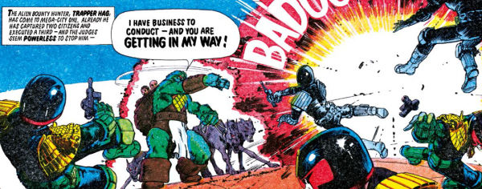

A hi-tech alien bounty hunter finds the Judges of Mega-City One a bit of a nuisance as he tries to fulfil his warrants.
Art by Steve Dillon
| Story Title | Parts | Pages | w indicates a wraparound coverCovers | Year(s) | Issues | Writer | Artist | Colourist | Letterer |
|---|---|---|---|---|---|---|---|---|---|
From Judge DreddTrapper Hag | 3 | 19 | 305: Steve Dillon 307: Steve Dillon 2 | 1983 | Reprints: http://content.2000adonline.com/FCBD2017/TrapperHag.pdf 305-307 | Alan Grant, John Wagner | Steve Dillon | <-- 6pp, [b&w] | Tom Frame |
From Judge DreddThe Revenge of Trapper Hag | 2 | 12 | 1166: Trevor Hairsine 1 | 1999 | 1165-1166 | John Wagner | Siku | Chris Blythe | Tom Frame |
From Anderson Psi Division Just a mental projection of Death.Hag Team | 1 | 5 | 0 | 2017 | FCBD7 | Dan Abnett | Dani | John Charles | Sam Gretton |
From Judge Dredd Trapper's wife: Keeper Hag.The Hard Way | 6 | 37 | 2252: Cliff Robinson & Dylan Teague 2255: Alex Ronald2 | 2021 | 2250-2255 | Rob Williams Arthur Wyattvarious | Jake Lynch | Jim Boswell | Annie Parkhouse |
| year | episodes | pages |
| 1981 | 0 | 0 |
| 1982 | 0 | 0 |
| 1983 | 3 | 19 |
| 1984 | 0 | 0 |
| 1985 | 0 | 0 |
| 1986 | 0 | 0 |
| 1987 | 0 | 0 |
| 1988 | 0 | 0 |
| 1989 | 0 | 0 |
| 1990 | 0 | 0 |
| 1991 | 0 | 0 |
| 1992 | 0 | 0 |
| 1993 | 0 | 0 |
| 1994 | 0 | 0 |
| 1995 | 0 | 0 |
| 1996 | 0 | 0 |
| 1997 | 0 | 0 |
| 1998 | 0 | 0 |
| 1999 | 2 | 12 |
| 2000 | 0 | 0 |
| 2001 | 0 | 0 |
| 2002 | 0 | 0 |
| 2003 | 0 | 0 |
| 2004 | 0 | 0 |
| 2005 | 0 | 0 |
| 2006 | 0 | 0 |
| 2007 | 0 | 0 |
| 2008 | 0 | 0 |
| 2009 | 0 | 0 |
| 2010 | 0 | 0 |
| 2011 | 0 | 0 |
| 2012 | 0 | 0 |
| 2013 | 0 | 0 |
| 2014 | 0 | 0 |
| 2015 | 0 | 0 |
| 2016 | 0 | 0 |
| 2017 | 1 | 5 |
| 2018 | 0 | 0 |
| 2019 | 0 | 0 |
| 2020 | 0 | 0 |
| 2021 | 6 | 37 |